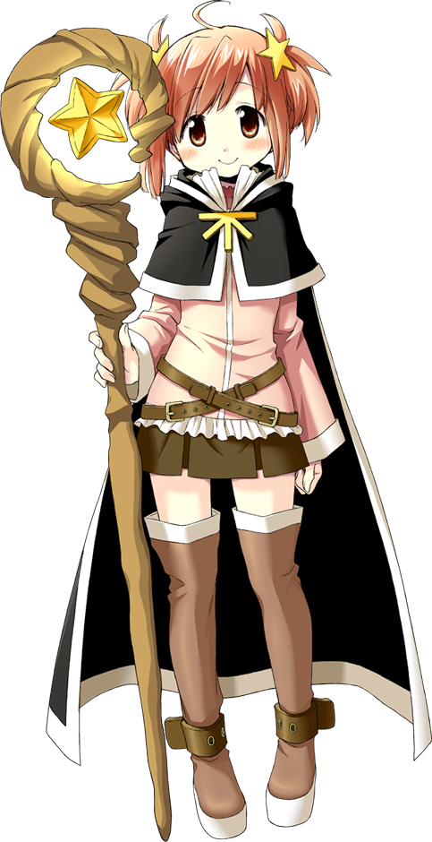
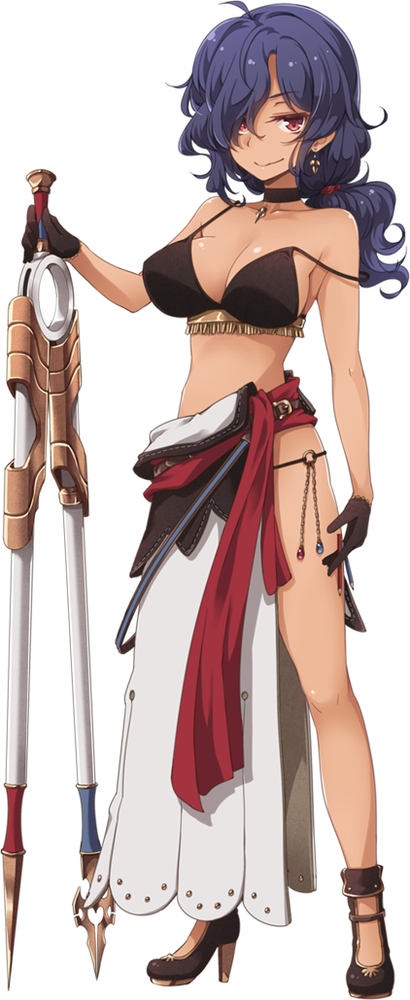
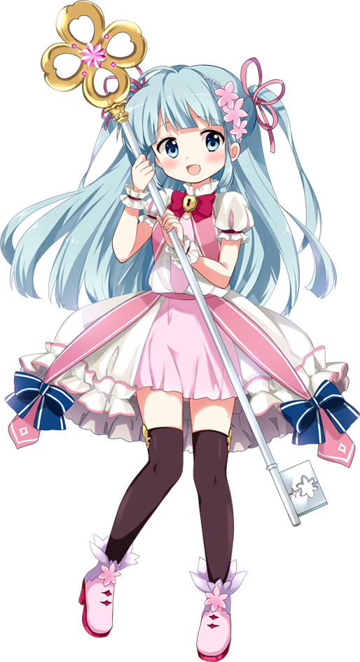
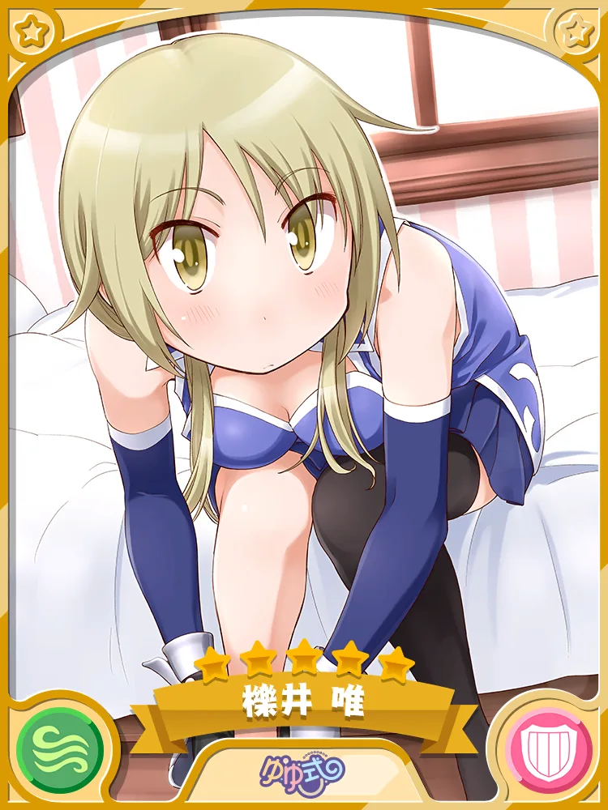

KIRARA FANTASIA · 同人外传 / FAN EPILOGUE
故事早已完结，但掌声还没有停。
横版动作 · 三人共演 · 星纹构筑
✦ 键盘 / 手柄 / 触屏 · 建议横屏 · 返回纪念之庭




ART FROM KIRARA FANTASIA
v1.0 · 2026 · 非官方同人作品
THE GREEN ROOM
CASTING CALL
“把最后一束光，留给还在看的人。”
AFTER THE APPLAUSE
掌声惊醒了某段沉睡的记忆。选择一张星纹卡，让它加入今晚的节目。
NEXT ON STAGE
舞台的灯还亮着。挑一张节目单，走向下一幕。
BACKSTAGE STALL
“道具、情报、退路，我都备好了。”——科克
INTERMISSION
把面具摘下来，喘口气。灯油还够，故事也还长。
IMPROVISATION
AD移动
空格跳跃 / 二段跳
J普攻（可连击）
K特技
L闪身（无敌帧）
Shift换演 / 登场技
Q谢幕（满星辉）
Esc暂停
左手摇杆移动，右手按钮：斩 普攻（可连击）、技 特技、闪 闪身（无敌帧）、跳 跳跃 / 二段跳、换 换演、幕 谢幕（满星辉）。右上角 Ⅱ 暂停。
CURTAIN CALL
“灯灭了，但你看，星星还在。”
ARCHIVE OF ENCORES
ETERNAL PROGRAM
BACKSTAGE CONTROL
本作是非官方同人作品，素材版权归《闪耀幻想曲》及相关权利方所有。
HOW TO PLAY
这是舞台，也是战场。别怕输，观众只有星星。
带三位演员上场。生命各自独立，倒下的人要等中场休息才能回来。按 Shift 换演，登场技会造成伤害并附加该演员的属性。
攻击会给敌人留下属性印记。用另一种属性命中，就会触发反应：蒸腾、燎原、蚀爆、凝霜……善用三位演员的不同属性，伤害会成倍增长。
连续命中、闪避、触发反应都会提升喝彩等级，最高 SSS，直接放大伤害。星辉槽满后按 Q 发动谢幕技，全屏演出。
每场谢幕后，会有一位共演者加入节目单，提供被动强化。搭配职业与属性，构筑今晚的打法。
全剧三幕，每幕由若干场演出与一位幕终主角组成。每次清场后可以挑选下一场：战斗、精英、商店、休息或即兴事件。
即使演出失败，掌声也会留下。回到后台，用它解锁新演员、购买永久强化，然后再次拉开帷幕。
AD 移动
空格 跳跃 / 二段跳
J 攻击
K 特技
L 闪身
Shift 换演
Q 谢幕
Esc 暂停
正在点亮舞台